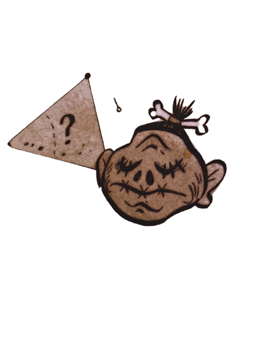

Como venho catalogando essas bizarrices, me ocorreu que ainda não mirei o microscópio na bizarrice com que estou mais intimamente familiarizado:
eu mesmo
Se eu conseguir publicar minha teoria, acabarei me tornando meio que uma figura pública.
Assim, para o bem dos registros históricos, eu provalvelmente deveria abordar o assunto:
Quem sou eu???
Para simplificar, sou estranho. Nasci estranho, me sinto atraído por estranhezas, e as estranhezas sempre foram atraídas por mim.
Onde eu cresci, éramos encorajados a seguir as regras e nos encaixar nos modelos. Lembro-me de encontrar uma cabeça escolhida na loja de penhores da família e levá-lo comigo para mostrar a todos na escola. Os outros alunos levaram bolas de futebol, troféus de futebol e livros sobre futebol. Todos esses objetos foram jogados em mim quando mostrei o meu achado.Se meu irmão não tivesse me protegido e socado um dos garotos no nariz, eu teria o resto do ano no hospital.
Ainda me lembro de ter lido sobre o Triângulo das Bermudas quando era criança. A ideia de um lugar onde você pudesse simplesmente desaparecer no desconhecido me fascenaria.
Talvez seja sorte, talvez destino, mas desde então achei meu próprio Triângulo das Bermudas: Gravity Falls, o lugar onde me encaixo. E aqui que vou formular minha grande teoria e talvez encontrar a mim mesmo no processo.
